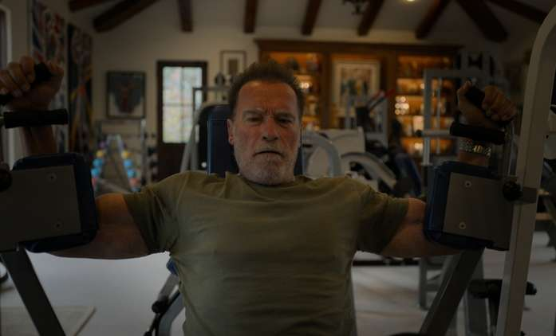

Arnold Schwarzenneger
dobrý kamarád
nutriční poradce
známý herec
Odhodlaný a disciplinovaný:
Arnold by kladl velký důraz na disciplinovaný přístup k tréninku. Připomínal by, jak důležité je dodržovat tréninkový plán, správnou techniku a konzistentní úsilí. Jeho vlastní kariéra je dokladem toho, že pevná vůle a vytrvalost vedou k úspěchu.
Motivující a inspirativní:
Díky své charismatické osobnosti by Arnold motivoval své svěřence k dosažení jejich maximálního potenciálu. Jeho motivační proslovy a osobní příběhy by inspirovaly ostatní k překonávání vlastních limitů.
Detailně zaměřený na techniku:
Arnold by kladl velký důraz na správnou techniku cvičení, aby minimalizoval riziko zranění a maximalizoval efektivitu tréninku. Své bohaté zkušenosti by předával prostřednictvím praktických rad a korekcí během cvičení.
Další obrázky: